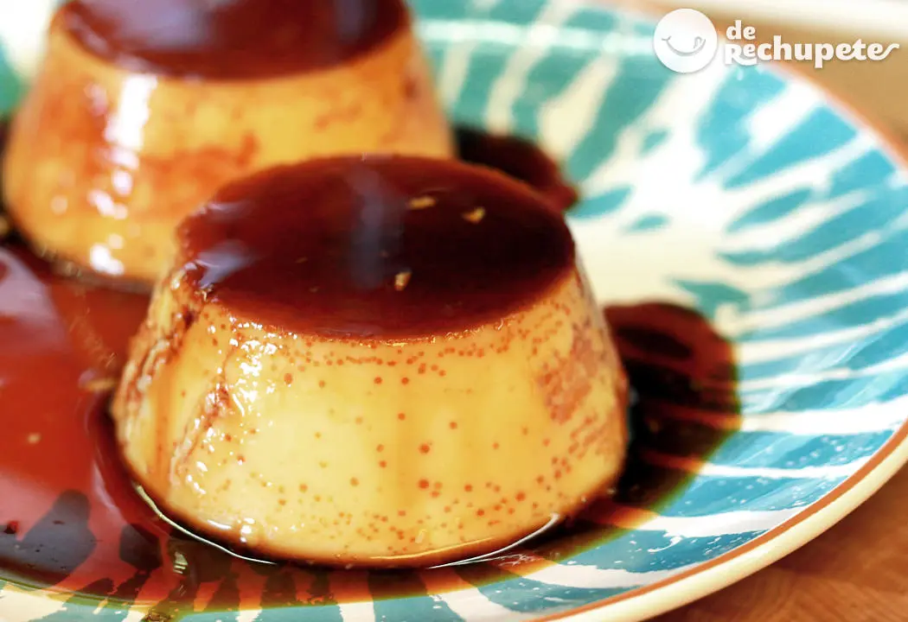

Flan

A simple but delicious dessert
For this dessert you only will need eggs, milk and sugar.
This is a really easy dessert that my grandmother taught me. We can simplify the recipe in three steps: prepare the caramel, mix and bake! And if you eat it with "dulce de leche" or Chantilly cream it's fantastic!
Ingredients
- Eggs - 10
- Milk - 1 L
- Sugar - 200 gr
- Vainilla essence - 1 tablespoon
Steps
- Preheat your oven to 180ºC
- In a flan mold melt the sugar until is liquefied and golden. Let it rest
- In a bowl mix the eggs with the sugar
- Add the milk and keep mixing
- Add the vainilla essence
- Pour the mix into the mold with caramel
- Cover the mold with aluminum foil so that a crust dosn't form on the surface
- Bake in a medium/low oven for an hour in a source with water up to half
- Let it rest in the fridge ultil is cold
- Demolding (be careful!)